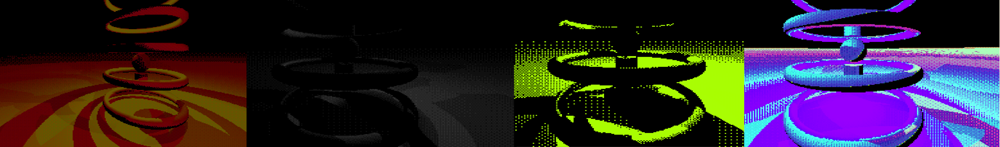
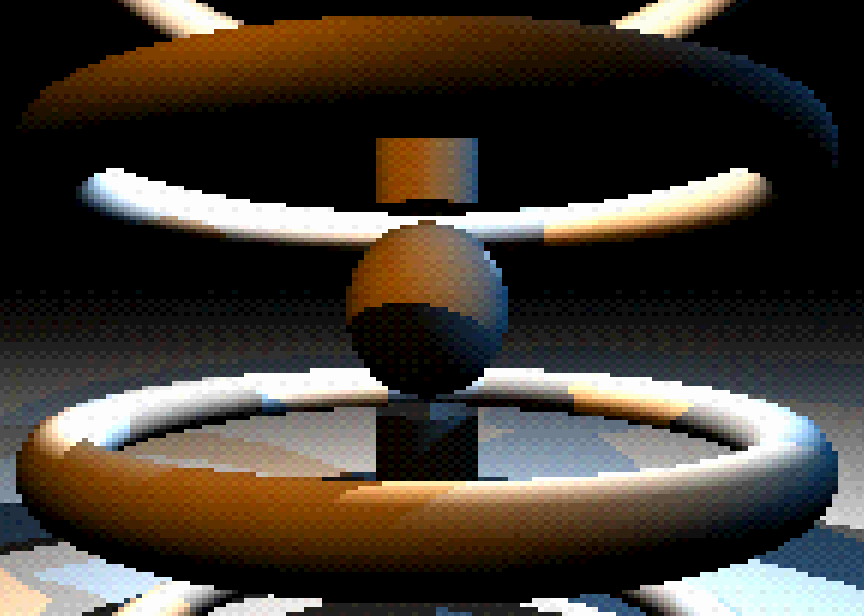
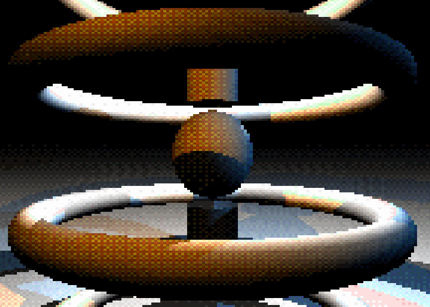

Dithered Raymarching, Part 2: Color Spaces
This is a project that is about rendering with signed distance fields, and an interesting image processing stage that follows and operates on the result. In the video above, you can see it switching between color space representations, a process that I'll describe in more detail below. You'll notice some have some pretty significant artifacts. I've included some basic shapes, one of which is repeated using mod logic, and some colored lights to create some contrast. I've been researching SDFs a lot lately for applications in Voraldo 1.2, which now includes a user editor so that the voxel locations can be evaluated against arbitrary, user-defined SDFs. It is going to include a header with a lot of utility functions and basic primitives, too, to make it easier to make complex shapes in a small amount of code.
The basic idea of the changes to the dithering algoritm is to reduce precision in different color spaces. This process goes: convert RGB to the selected representation, bitcrush (see part 1), then convert your chosen representation back to RGB for output. You can see in the gif above, and the images below, some have more artifacts than others. They arise in different types of situations in different color spaces - some have pronounced banding when the lighting calculation is at a glancing angle, where there is very gradual gradient in the input, where others have strange fragmentation around highlights or patches of continuous color. Some other spaces defined in different ranges (YCbCr) and the result ends up much less predictable.
Personally, for fidelity, I'm a big fan of the YUV, sRGB, HSL, and xyY results, some kind of weighted blend of these four will probably be the ideal solution going forward. I like the way the xyY result brings out the chroma in a really interesting way. I played around a little with some different approaches, converting data from RGB to another space, then considering this converted data as if it were still RGB and doing another conversion. I also did the same on the back end after the bitcrush. This had some interesting, almost tonemap-like effects. Definitely an interesting idea worth revisiting for stylistic stuff, as a postprocessing pass.
Examples of Different Color Spaces
The following images are taken using the different color space conversions, as noted by the heading. They are all taken with the geometry and lighting in exactly the same position, so that the dithering algorithm is operating on the same input, which you can see in the 'No Dithering' image.
No Dithering
HSL
HSV
RGB
YUV